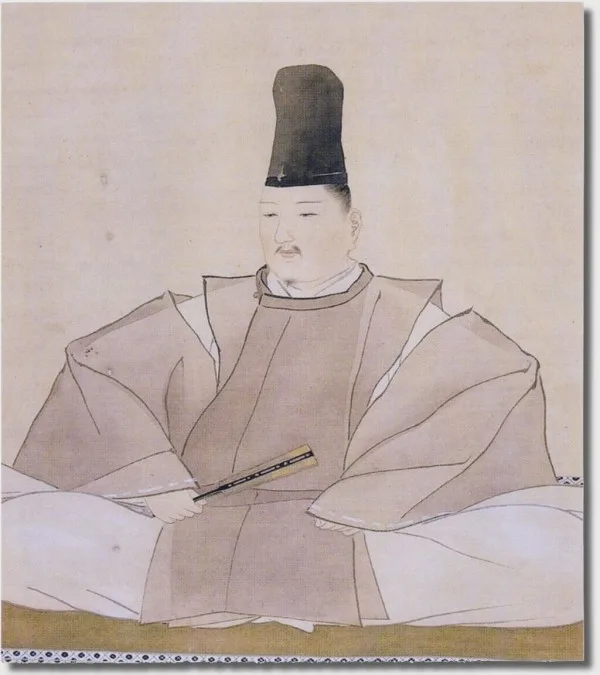

今川義元戦国編 其の四
お寺で修行していた僧が、やがて三つの国にまたがる大名になりました。
この人の一番の謎：もとはお坊さんだった？
生涯の要点
- 1519年、駿河（今の静岡県中部）の大名・今川氏親の子として生まれ、幼くして寺に入りました（三男とも五男ともいわれます）
- 僧として善得寺で修行し、京都の建仁寺・妙心寺でも修行を重ねました
- 1536年、当主だった兄・氏輝が若くして亡くなり、異母兄の玄広恵探と家督を争って勝ち（花倉の乱）、寺を出て当主となりました
- 駿河・遠江を治め、三河にも勢力を広げました
- 1553年に定めた「仮名目録追加」には「只今はをしなべて自分の力量を以て国の法度を申付」という一節があります
- 1549年、人質として駿府に迎えた松平竹千代が、のちの徳川家康です
- 1560年、尾張へ兵を進め、桶狭間に本陣を置いたところを織田信長に急襲され、討たれました（42歳・数え年）
- 江戸時代の書物では軽く描かれましたが、残された史料から、有能な大名だったという見方もあります
よくある疑問
もとはお坊さんだった？
はい。幼くして寺に入り、善得寺や京都の建仁寺・妙心寺で修行しました。1536年に兄が亡くなり、家督争いに勝って当主となりました。
弱い大名だったの？
江戸時代の書物では軽く描かれましたが、残された史料から、有能な大名だったという見方もあります。
長編で、この場面から見る
- ▶ 1:36 2 首を取られた大名（今川義元）
非業の最期をとげた戦国の人10人｜わが子に討たれた父、腹を切らされた茶人
長編を読む
非業の最期をとげた戦国の人10人｜わが子に討たれた父、腹を切らされた茶人
同じころに亡くなった人

今川義元像
60秒で見る
出典と画像
参考：コトバンク「今川義元」（日本大百科全書・改訂新版 世界大百科事典・ブリタニカ国際大百科事典・山川 日本史小辞典）、名古屋市「桶狭間古戦場」
肖像：今川義元像／Wikimedia Commons／パブリックドメイン
写真：桶狭間古戦場公園（名古屋市緑区） 撮影 Hyppolyte de Saint-Rambert／Wikimedia Commons／CC BY 4.0（https://creativecommons.org/licenses/by/4.0/）を縦長に配置して使用
動画のナレーション：VOICEVOX:青山龍星